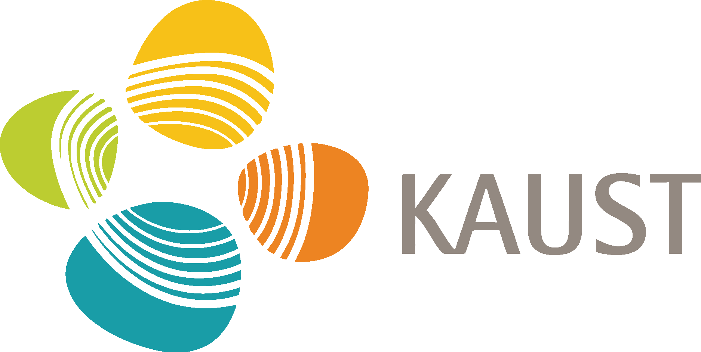
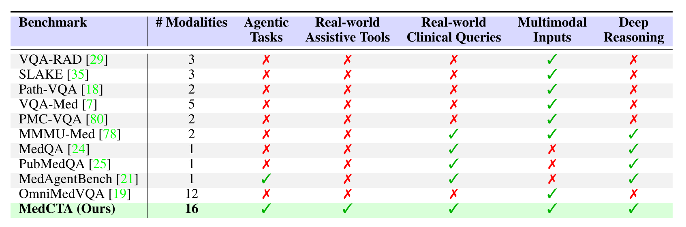
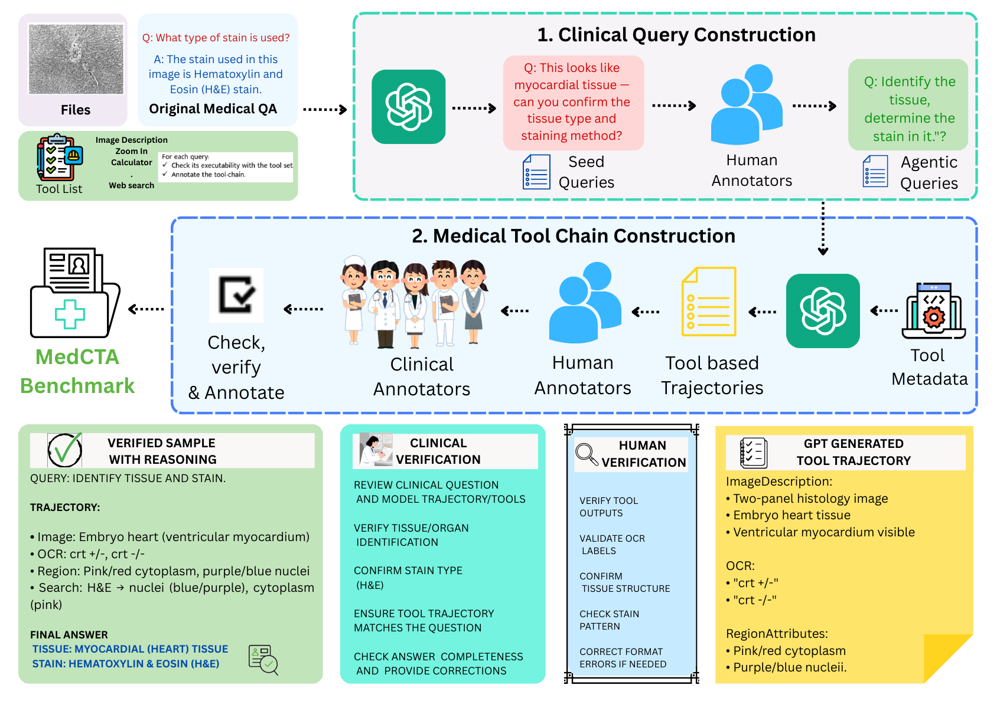
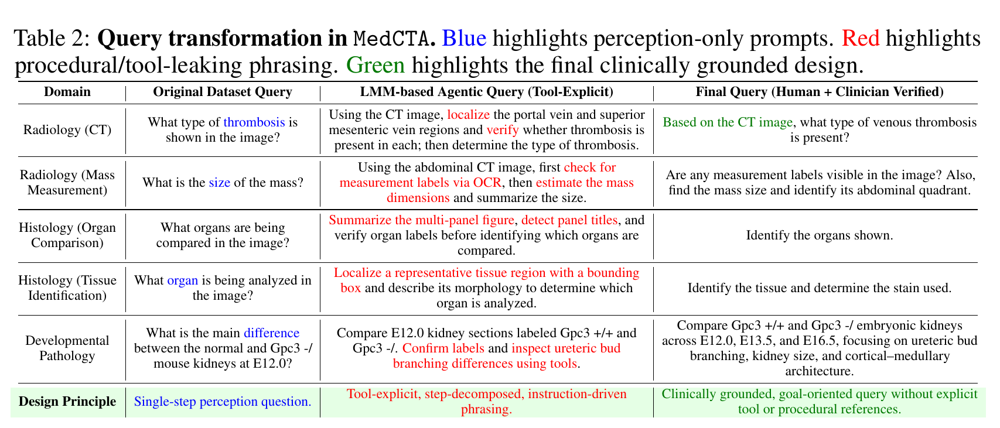
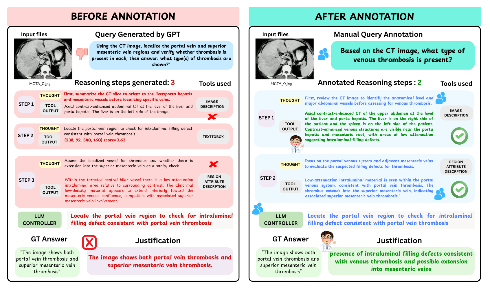
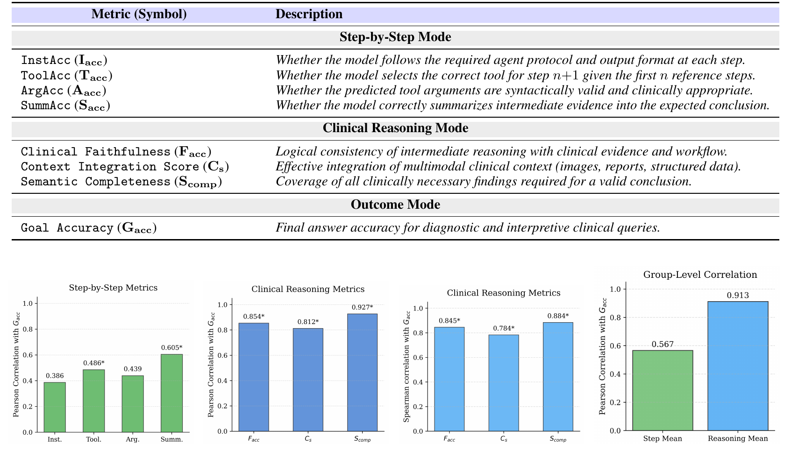
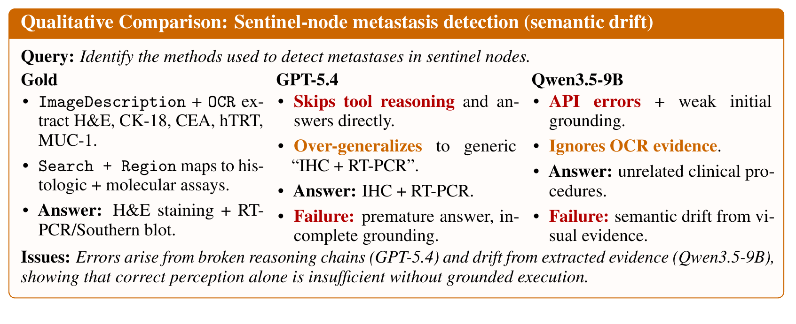

Abstract. To make clinically grounded decisions, medical AI agents are expected to go beyond simple recognition and be capable of tool retrieval, evidence acquisition, and integration. Existing benchmarks largely evaluate isolated perception or single-turn question answering, and therefore provide limited visibility into failures of planning, tool recruitment, and rollout reliability. We introduce MedCTA, a benchmark for evaluating medical tool agents on clinician-validated, step-implicit tasks grounded in realistic multimodal clinical inputs, including radiology images, pathology slides, and reports. MedCTA comprises 107 real-world clinical tasks with clinician- verified executable trajectories over 5 deployed tools, and supports process-aware evaluation of tool selection, argument validity, execution stability, trajectory fidelity, and outcome quality. We benchmark 18 open- and closed-source multimodal models and find that even frontier systems remain brittle in multi-step clinical tool use: autonomous rollouts are dominated by protocol failures, premature stopping, and incorrect tool recruitment, while gold-standard tool routing yields large but still incomplete gains. These results show that strong backbone perception does not translate into reliable agentic behavior in clinical settings. MedCTA provides a rigorous testbed for auditing, diagnosing, and advancing trustworthy medical AI agents.
Why Clinical Tool Agents?
Clinical decision making is iterative and multimodal: agents must inspect images, extract text, measure findings, retrieve knowledge, combine evidence, and stop only after the conclusion is supported. MedCTA turns that requirement into an executable benchmark where the tool sequence is hidden from the model and must be planned autonomously.
Task tuple
Each task is represented as (X, Q, U, π, A): clinical context, step-implicit query, hidden sufficient tool subset, reference interaction trace, and final clinical outcome.
What MedCTA measures
The benchmark separates controller competence from clinical reasoning by scoring instruction following, tool selection, argument validity, evidence summaries, clinical faithfulness, context integration, semantic completeness, and final goal accuracy.

Clinically Grounded, Tool-Implicit Tasks
MedCTA starts from perception-level medical QA seeds and lifts them into realistic clinical objectives. LMM drafts provide scalable starting points, human annotators remove tool leakage and procedural phrasing, and clinicians verify medical correctness, workflow plausibility, and final outcomes.

Clinical query construction
Final queries are goal-oriented and clinically phrased. They require multi-step tool use but do not reveal which tools should be called or in what order.
Reference trajectory construction
Candidate trajectories are drafted by an LMM, technically refined for schema compliance and minimality, then clinically verified for evidence grounding and reasoning soundness.


Broad Multimodal Clinical Coverage
Executable tool library
| Tool | Purpose |
|---|---|
| OCR | Extract visible text from images and documents. |
| ImageDescription | Generate holistic visual summaries. |
| RegionAttributeDescription | Describe attributes in localized image regions. |
| GoogleSearch | Retrieve external knowledge for a query. |
| Calculator | Evaluate symbolic and numerical expressions. |
Modality coverage
The benchmark mixes radiology, pathology, report-based inputs, microscopy, fundus photography, and other clinical image types.
Trajectory-Aware Evaluation
MedCTA reports three complementary metric groups: step-by-step tool-use fidelity, clinical reasoning quality, and final outcome accuracy. This makes it possible to identify whether a model failed because it chose the wrong tool, produced invalid arguments, drifted away from evidence, or reached the wrong clinical conclusion.
| Metric group | Metrics | What it diagnoses |
|---|---|---|
| Step-by-step | InstAcc, ToolAcc, ArgAcc, SummAcc | Protocol adherence, next-tool selection, argument validity, and intermediate summarization. |
| Clinical reasoning | Facc, Cs, Scomp | Clinical faithfulness, multimodal context integration, and semantic completeness. |
| Outcome | Gacc | Final answer accuracy for diagnostic and interpretive tasks. |

MedCTA Leaderboard
In the autonomous tool-using setting, the best reported outcome accuracy is 31.54%. The strongest open model reaches 27.80%, while gold-standard tool routing produces large gains, indicating a major controller reliability gap.
| Model | Family | Step-by-Step | Clinical Reasoning | Gacc | |||||
|---|---|---|---|---|---|---|---|---|---|
| Inst. | Tool. | Arg. | Summ. | Facc | Cs | Scomp | |||
| GPT-5.4* closed | OpenAI | 35.27 | 23.46 | 12.61 | 35.51 | 17.52 | 14.21 | 18.60 | 31.54 |
| GPT-5.4-mini* closed | OpenAI | 5.36 | 6.74 | 3.23 | 0.93 | 16.47 | 10.56 | 17.29 | 28.31 |
| GPT-5.4-nano* closed | OpenAI | 33.93 | 18.18 | 12.02 | 34.24 | 18.43 | 11.96 | 14.77 | 20.30 |
| GPT-oss-20B open | OpenAI | 1.79 | 0.00 | 0.00 | 0.00 | 1.31 | 0.56 | 1.68 | 3.18 |
| Claude-opus-4-6* closed | Anthropic | 24.78 | 8.80 | 0.59 | 39.25 | 14.11 | 14.86 | 23.83 | 31.32 |
| Claude-sonnet-4-6* closed | Anthropic | 23.66 | 4.99 | 0.00 | 33.64 | 12.77 | 12.90 | 20.19 | 25.33 |
| Claude-haiku-4-5* closed | Anthropic | 27.46 | 13.78 | 4.69 | 43.93 | 9.35 | 3.36 | 14.11 | 23.08 |
| Gemini-3-flash* closed | 3.35 | 17.30 | 0.00 | 5.61 | 11.31 | 8.60 | 15.98 | 25.87 | |
| Gemini-3-flash-lite* closed | 2.90 | 8.21 | 0.00 | 1.87 | 10.75 | 6.82 | 14.58 | 23.64 | |
| Qwen3.5-9B open | Qwen | 44.20 | 14.37 | 13.78 | 29.91 | 10.37 | 17.10 | 13.36 | 21.64 |
| Qwen3-8B open | Qwen | 33.93 | 10.56 | 7.04 | 32.71 | 8.50 | 10.09 | 11.50 | 27.80 |
| DeepSeek-R1-Distill-7B open | DeepSeek | 10.49 | 3.52 | 0.00 | 7.48 | 2.62 | 0.84 | 3.36 | 10.61 |
| Deepseek-llm-7b-chat open | DeepSeek | 11.61 | 6.45 | 0.00 | 4.67 | 4.30 | 2.62 | 4.02 | 11.00 |
| DeepSeek-V2-Lite-Chat open | DeepSeek | 11.83 | 11.14 | 0.29 | 0.00 | 3.83 | 3.55 | 6.54 | 6.96 |
| Llama-3.1-8B-Instruct open | Meta | 23.66 | 7.92 | 0.00 | 6.54 | 7.94 | 5.42 | 11.21 | 18.94 |
| Llama-3.2-3B-Instruct open | Meta | 18.53 | 1.76 | 0.00 | 4.67 | 3.08 | 1.68 | 5.14 | 11.29 |
| Mistral-7B open | Mistral | 18.75 | 14.66 | 0.00 | 9.35 | 2.52 | 1.87 | 3.46 | 9.40 |
| Phi-4 open | Microsoft | 20.09 | 6.45 | 0.00 | 14.02 | 6.36 | 3.36 | 6.17 | 10.65 |
Controller Failures Dominate Rollouts
Autonomous vs. gold routing
| Model | Auto | Gold | Gain |
|---|---|---|---|
| GPT-5.4 | 31.54 | 49.50 | +17.96 |
| Claude-opus-4-6 | 31.32 | 66.40 | +35.08 |
| Qwen3.5-9B | 21.64 | 49.50 | +27.86 |
Rollout diagnostics
| Metric | Value | Insight |
|---|---|---|
| API error rate | 64.2 | Protocol instability |
| Under-call rate | 99.2 | Premature stopping |
| Protocol failure | 58.3 | Rollout breakdown |
| Tool-selection failure | 41.6 | Incorrect actions |

Reliable Clinical Agency Requires More Than Perception
MedCTA shows a separation between backbone perception and agentic competence. Strong VLMs can identify medical content in a single turn, but autonomous clinical tool agents must also select tools, maintain valid interaction protocols, integrate intermediate evidence, and stop only when the answer is justified.
Backbone-only comparison
Several backbone VLMs score higher without tool interaction than many autonomous tool-agent rollouts, which indicates that agent control is itself a major research problem.
What to improve next
Future clinical agents need stronger tool recruitment, stable protocol execution, stop/continue calibration, and evidence-obedient reasoning over localized multimodal observations.
BibTeX
@misc{ashraf_medcta,
title = {MedCTA: A Benchmark for Clinical Tool Agents},
author = {Ashraf, Tajamul and Jeong, Hyewon and Thoker, Fida Mohammad and Ghanem, Bernard},
note = {Preprint},
howpublished = {\url{https://github.com/IVUL-KAUST/MedCTA}}
}